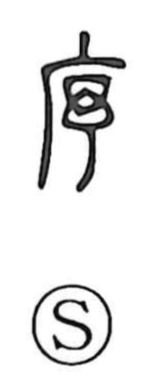

序

Uncategorized
Kun: tsuide | On: jo
order ・ sequence ・ preface ・ beginning
Explanation
Shirakawa reads 序 as a picto-phonetic graph. Its semantic side shows the eaved side-corridors that flanked a main hall—long, roofed spaces where instruction took place—hence expressions like 庠序 for a school. The phonetic is 予, originally the form of a weaving shuttle (杼) that slips back and forth through the warp and weft. From that steady passage arose the idea of following in sequence, giving 序 the senses of “order,” “discipline,” and “next,” as in 秩序. The phonetic 予 also marks the on reading jo, seen in related characters such as 杼 and 紓. By extension, 序 can stand in place of 緒, evoking the “end of a thread” and thus a “beginning,” which underlies its use for a preface.